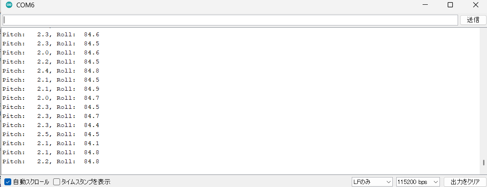
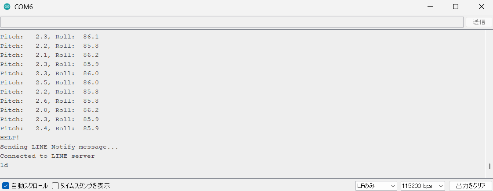
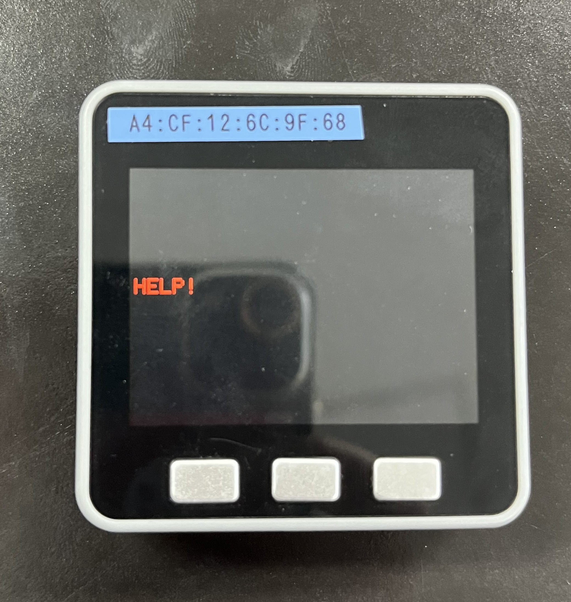

目的
授業でIoTを活用した環境問題の解決がテーマで課題に取り組むこととなり，観光地である奈良公園のペットボトルのポイ捨て等のゴミの不法投棄の問題の解決に取り組むことになった．奈良公園では，鹿がゴミ箱を破壊したり倒したりするため，ゴミ箱があまり置かれていないということに着目し，IoTを活用してそれらの問題を解決するゴミ箱を制作する．
ゴミ箱の機能
・鹿が嫌う音を出す ・ゴミ箱が倒れると管理者に通知が行くシステム ・AIを活用したペットボトルの判定システム ・Webアプリで鹿せんべいの引換券などの報酬が得られるようなシステム
自分の担当部分
M5Stackを使って加速度センサでゴミ箱の転倒を検知 転倒を検知したら，LINE Notifyを利用して管理者にLINE通知が行くシステム
現状の成果
M5stackの加速度センサーから姿勢角を計算  M5Stackが傾くとM5Stackの画面に「HELP!」を表示  
プログラムはこちら